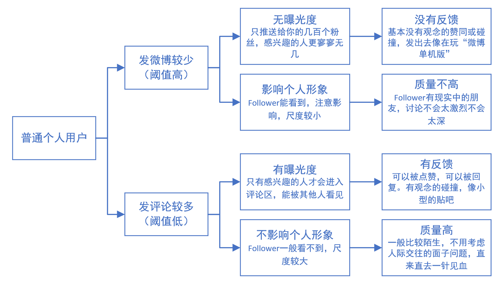

这里记录一些学生产品经理的观察和思考。一家之言，定有谬误之处，请诸君不吝指教。
在5月22日前后，我在刷新浪微博时发现，查看微博评论的交互发生了变化。 点击评论button，展示热门评论，但只默认展示前3条评论。下面有一个”下“箭头，然后是该博主最近发布的其他微博。想查看更多评论的话，需点击界面下方的“下”箭头。
当天便把这个现象记录了下来，但是由于经验不足，没有截图保留证据。过了几天打算写文时，发现微博已经改回了原有的交互方式，即
点击评论button，展示评论。拉动到最下部，也不会展示该博主的其他微博。
(虽然“该博主的其他微博”插入在评论区中，但这是另一个feature，不在此讨论了）
看来遇到了一次A-B TEST。在发现改动的时候，我就开始想这一改动是想解决什么问题，较之前的交互方式比有什么优劣。我认为，本次改动主要是以减少评论的曝光率为代价，增加了该博主其他微博的曝光率，引导用户“关注”博主。 在我看来，这个变动是不好的，理由如下
